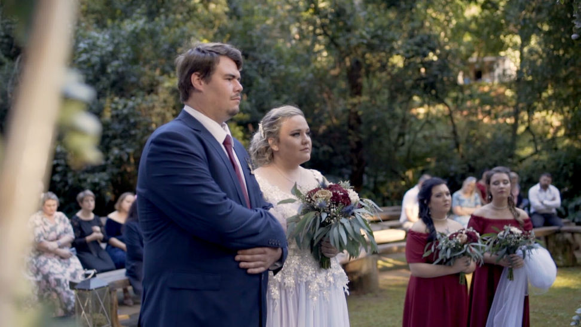
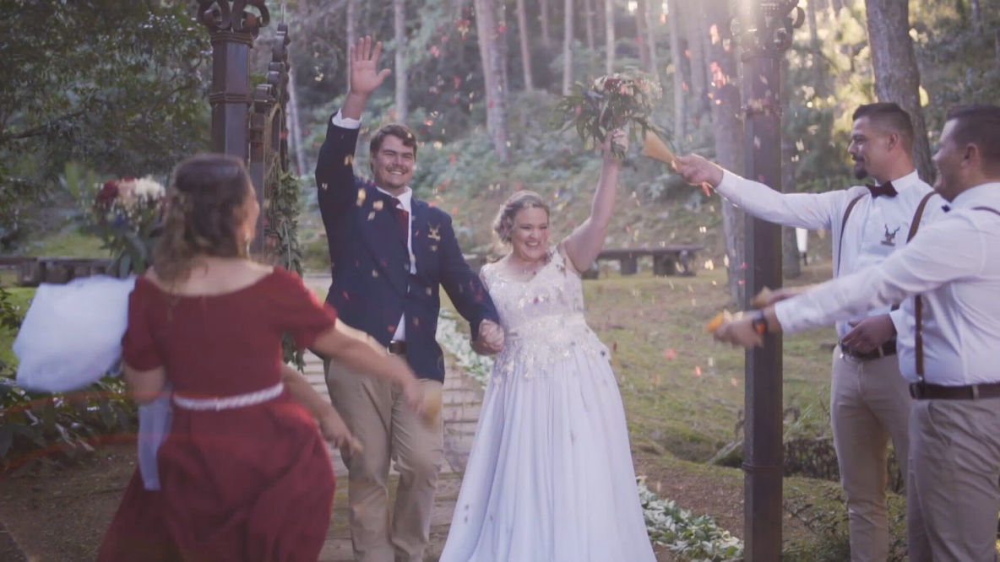
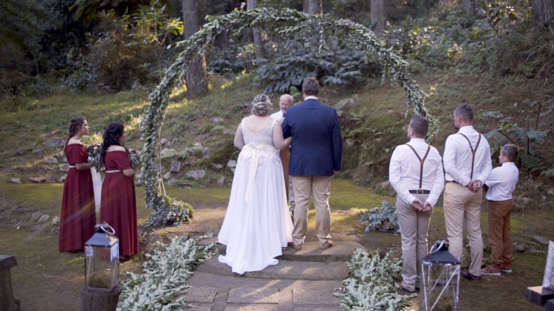
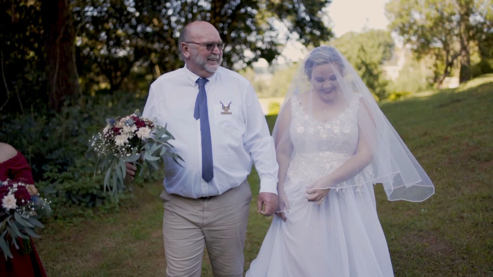
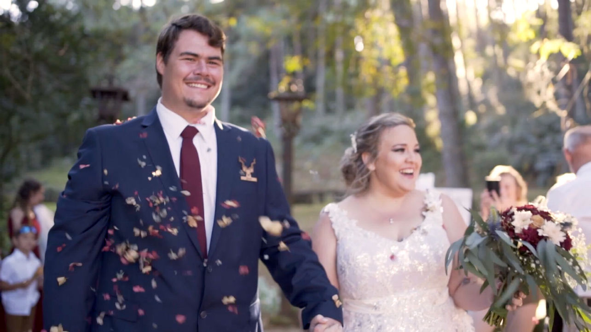
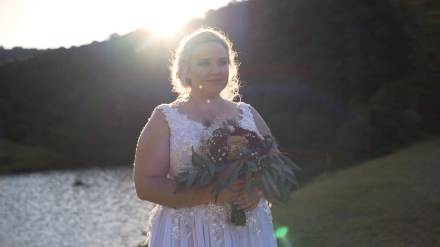

blah blah summary


Another common mistake is hiring someone and asking them to shoot in a completely different style.
One experienced videographer explained it's much better to hire someone who consistently creates the style you already love rather than trying to change how they work.
Examples:
* Documentary
* Cinematic
* Editorial
* Home-movie
* Luxury
Audio Matters More Than People Think
Couples often focus on beautiful visuals.
Professionals repeatedly said:
Ask how they record vows and speeches.
Bad audio ruins a wedding film far more than slightly imperfect visuals.


Several couples said they chose the person they felt comfortable with.
One comment even mentioned avoiding companies where everything felt transactional and appreciating videographers who were easy to speak to.
You'll spend 8–12 hours with this person.
Ask:
* Highlight film?
* Ceremony edit?
* Speeches?
* Social media version?
* Raw footage?
* Delivery time?
Many misunderstandings happen simply because couples assume these are included.


If the film is one of the most important memories from your wedding, don't let price be the only deciding factor.
Many people felt the cheapest option often meant sacrificing experience or reliability.
If this was your wedding, would you be happy receiving this exact film?
It's such a simple way to judge a portfolio.
Blah blah hire us link to main page